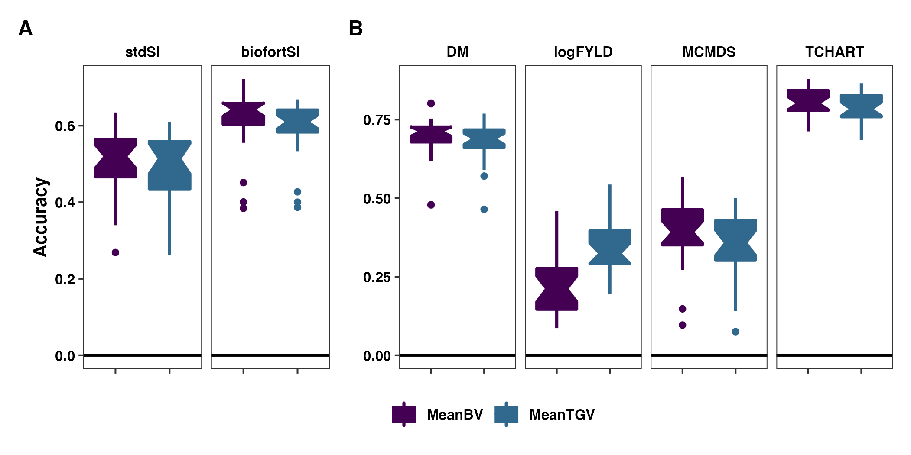

Figures
2021-March-22
Last updated: 2021-03-24
Checks: 7 0
Knit directory: PredictOutbredCrossVar/
This reproducible R Markdown analysis was created with workflowr (version 1.6.2). The Checks tab describes the reproducibility checks that were applied when the results were created. The Past versions tab lists the development history.
Great! Since the R Markdown file has been committed to the Git repository, you know the exact version of the code that produced these results.
Great job! The global environment was empty. Objects defined in the global environment can affect the analysis in your R Markdown file in unknown ways. For reproduciblity it’s best to always run the code in an empty environment.
The command set.seed(20191123) was run prior to running the code in the R Markdown file. Setting a seed ensures that any results that rely on randomness, e.g. subsampling or permutations, are reproducible.
Great job! Recording the operating system, R version, and package versions is critical for reproducibility.
Nice! There were no cached chunks for this analysis, so you can be confident that you successfully produced the results during this run.
Great job! Using relative paths to the files within your workflowr project makes it easier to run your code on other machines.
Great! You are using Git for version control. Tracking code development and connecting the code version to the results is critical for reproducibility.
The results in this page were generated with repository version 51bc973. See the Past versions tab to see a history of the changes made to the R Markdown and HTML files.
Note that you need to be careful to ensure that all relevant files for the analysis have been committed to Git prior to generating the results (you can use wflow_publish or wflow_git_commit). workflowr only checks the R Markdown file, but you know if there are other scripts or data files that it depends on. Below is the status of the Git repository when the results were generated:
Ignored files:
Ignored: .DS_Store
Ignored: .Rhistory
Ignored: .Rproj.user/
Ignored: analysis/.DS_Store
Ignored: output/.DS_Store
Untracked files:
Untracked: Icon
Untracked: PredictOutbredCrossVarMS_ResponseToReviews_R1.gdoc
Untracked: manuscript/
Untracked: output/crossPredictions/
Untracked: output/gblups_DirectionalDom_parentwise_crossVal_folds.rds
Untracked: output/gblups_geneticgroups.rds
Untracked: output/gblups_parentwise_crossVal_folds.rds
Untracked: output/mtMarkerEffects/
Unstaged changes:
Modified: analysis/NGCleadersCall.Rmd
Modified: data/blups_forawcdata.rds
Modified: data/genmap_awc_May2020.rds
Modified: data/parentwise_crossVal_folds.rds
Modified: data/ped_awc.rds
Modified: data/selection_index_weights_4traits.rds
Modified: output/CrossesToPredict_top100stdSI_and_209originalParents.rds
Modified: output/accuraciesMeans.rds
Modified: output/accuraciesUC.rds
Modified: output/accuraciesVars.rds
Modified: output/crossRealizations/realizedCrossMeans.rds
Modified: output/crossRealizations/realizedCrossMeans_BLUPs.rds
Modified: output/crossRealizations/realizedCrossMetrics.rds
Modified: output/crossRealizations/realizedCrossVars.rds
Modified: output/crossRealizations/realizedCrossVars_BLUPs.rds
Modified: output/crossRealizations/realized_cross_means_and_covs_traits.rds
Modified: output/crossRealizations/realized_cross_means_and_vars_selindices.rds
Modified: output/ddEffects.rds
Modified: output/gebvs_ModelA_GroupAll_stdSI.rds
Modified: output/obsVSpredMeans.rds
Modified: output/obsVSpredUC.rds
Modified: output/obsVSpredVars.rds
Modified: output/pmv_DirectionalDom_varcomps_geneticgroups.rds
Modified: output/pmv_varcomps_geneticgroups.rds
Modified: output/pmv_varcomps_geneticgroups_tidy_includingSIvars.rds
Modified: output/propHomozygous.rds
Modified: output/top100stdSI.rds
Note that any generated files, e.g. HTML, png, CSS, etc., are not included in this status report because it is ok for generated content to have uncommitted changes.
These are the previous versions of the repository in which changes were made to the R Markdown (analysis/Figures.Rmd) and HTML (docs/Figures.html) files. If you’ve configured a remote Git repository (see ?wflow_git_remote), click on the hyperlinks in the table below to view the files as they were in that past version.
| File | Version | Author | Date | Message |
|---|---|---|---|---|
| Rmd | 51bc973 | wolfemd | 2021-03-24 | the filepaths MUST work |
| html | e6859e5 | wolfemd | 2021-03-24 | Build site. |
| Rmd | c950984 | wolfemd | 2021-03-24 | does it work? |
| html | b892cee | wolfemd | 2021-03-24 | Build site. |
| html | b2293fc | wolfemd | 2021-03-24 | Build site. |
| Rmd | 6a5154c | wolfemd | 2021-03-24 | test |
| html | 0f2413f | wolfemd | 2021-03-24 | Build site. |
| Rmd | 9993c97 | wolfemd | 2021-03-24 | test |
| html | 25d4113 | wolfemd | 2021-03-24 | Build site. |
| Rmd | 672d321 | wolfemd | 2021-03-24 | test |
| html | 6894dd1 | wolfemd | 2021-03-24 | Build site. |
| Rmd | ef0c5fd | wolfemd | 2021-03-24 | Fixing paths to figure files. |
| html | 3100a7d | wolfemd | 2021-03-24 | Build site. |
| html | 2e6702a | wolfemd | 2021-03-24 | Build site. |
| Rmd | 2ec2ff8 | wolfemd | 2021-03-24 | Update graphics device so each figure saves to unique file name and displays properly in both HTML and PDF outputs. |
| html | be1e9fc | wolfemd | 2021-03-24 | Build site. |
| Rmd | f73b05f | wolfemd | 2021-03-24 | Update to match revised manuscript. Several comparisons moved to Appendix to streamline primary results, figures, etc. |
| html | 4de1330 | wolfemd | 2021-02-01 | Build site. |
| Rmd | 883b1d4 | wolfemd | 2021-02-01 | Update the syntax highlighting and code-block formatting throughout for |
| Rmd | 6a10c30 | wolfemd | 2021-01-04 | Submission and GitHub ready version. |
| html | 6a10c30 | wolfemd | 2021-01-04 | Submission and GitHub ready version. |
library(tidyverse); library(magrittr); library(patchwork); library(ragg)
# Global theme
plottheme<-theme_bw() +
theme(axis.text.x = element_blank(),
axis.title.x = element_blank(),
strip.background = element_blank(),
panel.grid.major = element_blank(),
panel.grid.minor = element_blank())Figure 1: Accuracy predicting family means
library(tidyverse); library(magrittr); library(patchwork)
# Table S10: Accuracies predicting the mean
accMeans<-readxl::read_xlsx(here::here("manuscript","SupplementaryTables.xlsx"),sheet = "TableS10")
accMeansMain<-accMeans %>%
filter(ValidationData=="GBLUPs", grepl("DirDom",Model))
forplot<-accMeansMain %>%
mutate(Trait=factor(Trait,levels=c("stdSI","biofortSI","DM","logFYLD","MCMDS","TCHART")),
predOf=factor(predOf,levels=c("MeanBV","MeanTGV")),
RepFold=paste0(Repeat,"_",Fold,"_",Trait))
colors<-viridis::viridis(4)[1:2]
baseplot<-ggplot() +
geom_hline(yintercept = 0, color='black', size=0.8) +
facet_grid(.~Trait) +
scale_fill_manual(values = colors) +
scale_color_manual(values = colors)
p1<-baseplot + plottheme +
geom_boxplot(data = forplot %>%
filter(grepl("SI",Trait)),
aes(x=predOf,y=Accuracy,fill=predOf, color=predOf),
size=0.9,notch = TRUE)
p2<-baseplot + plottheme +
geom_boxplot(data = forplot %>%
filter(!grepl("SI",Trait)),
aes(x=predOf,y=Accuracy,fill=predOf, color=predOf),
size=0.9,notch = TRUE) +
theme(axis.title.y=element_blank())pngfile <- fs::path("figure/Figures.Rmd/","figure1.png")
#pngfile <- fs::path(knitr::fig_path(), "figure1.png")
agg_png(pngfile, width = 17.8, height = 8.9, units = "cm", res = 300, scaling = 0.9)
p1 + p2 + plot_layout(widths = c(1, 2), guides='collect') +
plot_annotation(tag_levels = 'A') &
theme(plot.tag = element_text(face='bold'),
axis.title = element_text(face='bold',color = 'black'),
strip.text.x = element_text(face='bold',color='black'),
axis.text.y = element_text(face = 'bold',color='black'),
legend.title = element_blank(),
legend.text = element_text(face='bold'),
legend.position = 'bottom')
invisible(dev.off())
knitr::include_graphics(pngfile)
| Version | Author | Date |
|---|---|---|
| e6859e5 | wolfemd | 2021-03-24 |
Figure 1. Accuracy predicting the family mean. Fivefold parent-wise cross-validation estimates of the accuracy predicting the cross means on selection indices (A) and for component traits (B), is summarized in boxplots. Accuracy (y-axis) was measured as the correlation between the predicted and the estimated sample mean GEBV or GETGV. For each trait, accuracies are given for two predictions types: family mean BV vs. TGV.
Figure 2: Accuracy predicting family variances and covariances
## Table S11: Accuracies predicting the variances
library(tidyverse); library(magrittr); library(patchwork)
accVars<-readxl::read_xlsx(here::here("manuscript","SupplementaryTables.xlsx"),sheet = "TableS11")
forplot<-accVars %>%
filter(VarMethod=="PMV",ValidationData=="GBLUPs", grepl("DirDom",Model)) %>%
mutate(Trait1=factor(Trait1,levels=c("stdSI","biofortSI","DM","logFYLD","MCMDS","TCHART")),
Trait2=factor(Trait2,levels=c("stdSI","biofortSI","DM","logFYLD","MCMDS","TCHART")),
Component=paste0(Trait1,"_",Trait2),
predOf=factor(predOf,levels=c("VarBV","VarTGV")),
RepFold=paste0(Repeat,"_",Fold,"_",Component))
colors<-viridis::viridis(4)[1:2]
baseplot<-ggplot() +
geom_hline(yintercept = 0, color='black', size=0.8) +
facet_grid(.~Trait1) +
scale_fill_manual(values = colors) +
scale_color_manual(values = colors) + plottheme
p1<-baseplot +
geom_boxplot(data = forplot %>%
filter(Trait1==Trait2,grepl("SI",Trait1)),
aes(x=predOf,y=AccuracyWtCor,fill=predOf, color=predOf),
size=0.9,notch = TRUE)
p2<-baseplot +
geom_boxplot(data = forplot %>%
filter(Trait1==Trait2,!grepl("SI",Trait1)),
aes(x=predOf,y=AccuracyWtCor,fill=predOf, color=predOf),
size=0.9,notch = TRUE) +
theme(axis.title.y=element_blank())
p3<-baseplot +
geom_boxplot(data = forplot %>%
filter(Trait1!=Trait2,!grepl("SI",Trait1)),
aes(x=predOf,y=AccuracyWtCor,fill=predOf, color=predOf),
size=0.9,notch = TRUE) +
theme(strip.text.x = element_text(face='bold',margin = margin(t = 1, r = 0, b = 1, l = 0, unit = "pt")),
panel.spacing.x = unit(0.5, "lines")) +
facet_grid(.~Trait1+Trait2)pngfile <- fs::path("figure/Figures.Rmd/","figure2.png")
#pngfile <- here::here("docs",fs::path(knitr::fig_path(), "figure2.png"))
agg_png(pngfile, width = 17.8, height = 11.13, units = "cm", res = 300, scaling = 0.9)
((p1 + p2 + plot_layout(widths=c(0.33,0.67))) / p3) +
plot_layout(guides = 'collect',nrow=2) +
plot_annotation(tag_levels = 'A') &
theme(plot.tag = element_text(face='bold'),
axis.title = element_text(face='bold',color = 'black'),
strip.text.x = element_text(face='bold',color='black'),
axis.text.y = element_text(face = 'bold',color='black'),
legend.title = element_blank(),
legend.text = element_text(face='bold'),
legend.position = 'bottom') & labs(y="Accuracy")
invisible(dev.off())
knitr::include_graphics(pngfile)
Figure 2. Accuracy predicting the genetic (co)variances. Fivefold parent-wise cross-validation estimates of the accuracy predicting the genetic variance of crosses on selection indices (A) and for component trait variances (B) and covariances (C). Accuracy (y-axis) was measured as the correlation between the predicted and the estimated sample (co)variance of GEBV or GETGV. For each trait (panel), accuracies for two prediction types are given: VarBV and VarTGV.
Figure 3: Accuracy Predicting Usefulness Criteria
library(tidyverse); library(magrittr);
## Table S12: Accuracies predicting the variances
accUC<-readxl::read_xlsx(here::here("manuscript","SupplementaryTables.xlsx"),sheet = "TableS12")
forplot<-accUC %>%
filter(VarMethod=="PMV",Stage %in% c("Parent","AYT"), grepl("DirDom",Model)) %>% #count(predOf,Model)
mutate(Trait=factor(Trait,levels=c("stdSI","biofortSI","DM","logFYLD","MCMDS","TCHART")),
predOf=factor(predOf,levels=c("BV","TGV")),
Stage=recode_factor(Stage, `Parent` = "bold(UC[parent])", `AYT`= "bold(UC[variety])"))
colors<-viridis::viridis(4)[1:2]
baseplot<-ggplot() +
geom_hline(yintercept = 0, color='black', size=0.8) +
facet_grid(.~Trait) +
scale_fill_manual(values = colors) +
scale_color_manual(values = colors) +
scale_x_discrete(labels = scales::parse_format())
p1<-baseplot + plottheme +
geom_boxplot(data = forplot %>%
filter(grepl("SI",Trait)),
aes(x=Stage,y=AccuracyWtCor,fill=predOf, color=predOf),
size=0.9,notch = TRUE)
p2<-baseplot + plottheme +
geom_boxplot(data = forplot %>%
filter(!grepl("SI",Trait)),
aes(x=Stage,y=AccuracyWtCor,fill=predOf, color=predOf),
size=0.9,notch = TRUE) +
theme(axis.title.y=element_blank())pngfile <- here::here("docs",fs::path(knitr::fig_path(), "figure3.png"))
agg_png(pngfile, width = 17.8, height = 8.9, units = "cm", res = 300, scaling = 0.9)
p1 + p2 + plot_layout(widths = c(1, 2), guides='collect') +
plot_annotation(tag_levels = 'A') &
theme(plot.tag = element_text(face='bold'),
axis.title = element_text(face='bold',color = 'black'),
strip.text.x = element_text(face='bold',color='black'),
axis.text.y = element_text(face = 'bold',color='black'),
legend.title = element_blank(),
legend.text = element_text(face='bold'),
legend.position = 'bottom') & labs(y="Accuracy")
invisible(dev.off())
knitr::include_graphics(pngfile)
Figure 3. Accuracy predicting the usefulness (the expected mean of future selected offspring). Fivefold parent-wise cross-validation estimates of the accuracy predicting the usefulness of crosses on the selection indices (A) and for component traits (B), is summarized in boxplots. Accuracy (y-axis) was measured as the family-size weighted correlation between the predicted and observed usefulness of crosses for breeding parents (\(UC_{parent}\)) or varieties (\(UC_{variety}\)).
Figure 4: Importance of non-additive effects (variance components)
library(tidyverse); library(magrittr); library(patchwork)
## Table S15: Variance estimates for genetic groups
varcomps<-readxl::read_xlsx(here::here("manuscript","SupplementaryTables.xlsx"),sheet = "TableS15")
forplot<-varcomps %>%
mutate(Group=case_when(Group=="All"~"All",
Group=="GG"~"C0",
Group=="TMS13"~"C1",
Group=="TMS14"~"C2",
Group=="TMS15"~"C3"),
Group=factor(Group,levels=c("All","C0","C1","C2","C3"))) %>%
filter(VarMethod=="PMV", Method=="M2",Model %in% c("DirDomAD")) %>%
select(-VarMethod,-Method) %>%
mutate(Trait1=factor(Trait1,levels=c("stdSI","biofortSI","DM","logFYLD","MCMDS","TCHART")),
Trait2=factor(Trait2,levels=c("stdSI","biofortSI","DM","logFYLD","MCMDS","TCHART")))
baseplotAB<-ggplot() +
facet_grid(.~Trait1, scales='free_y') +
geom_hline(yintercept = 0, color='black', size=1) +
labs(y = "Prop.\nDominance") +
plottheme
p1<-baseplotAB +
forplot %>%
filter(Trait1==Trait2,grepl("SI",Trait1)) %>%
geom_bar(data=.,aes(x=Group,y=propDom),
stat = 'identity', position="dodge2", color='grey40', fill=viridis::viridis(5)[2])
p2<-baseplotAB +
forplot %>%
filter(Trait1==Trait2,!grepl("SI",Trait1)) %>%
geom_bar(data=.,aes(x=Group,y=propDom),
stat = 'identity', position="dodge2", color='grey40', fill=viridis::viridis(5)[2]) +
theme(axis.title.y=element_blank())
p3<-forplot %>%
filter(Trait1!=Trait2,!grepl("SI",Trait1)) %>%
select(-propDom) %>%
pivot_longer(cols = c(VarA,VarD), names_to = "VarComp", values_to = "Var") %>%
ggplot(.,aes(x=Group,y=Var,fill=VarComp)) +
plottheme +
scale_fill_manual(values = viridis::viridis(4)[1:2]) +
geom_bar(stat = 'identity', position = 'dodge2', size=1) +
facet_wrap(~Trait1+Trait2, scales='free_y',nrow = 1) +
geom_hline(yintercept = 0, color='black', size=1) +
labs(y = "Covariance\nEstimates")pngfile <- here::here("docs",fs::path(knitr::fig_path(), "figure4.png"))
agg_png(pngfile, width = 17.8, height = 11.13, units = "cm", res = 300, scaling = 0.9)
(p1 + p2 + plot_layout(widths = c(1, 2))) / p3 +
plot_annotation(tag_levels = 'A') &
theme(plot.tag = element_text(face = 'bold'),
axis.title = element_text(face = 'bold',color = 'black'),
strip.text.x = element_text(face = 'bold',color = 'black'),
axis.text.x = element_text(face = 'bold',color = 'black', angle=90),
axis.text.y = element_text(face = 'bold',color = 'black'),
legend.title = element_blank(),
legend.text = element_text(face = 'bold'),
legend.position = 'bottom')
invisible(dev.off())
knitr::include_graphics(pngfile)
Figure 4. Population-level measures of the importance of dominance genetic effects. The genetic variance estimates from the models fitted to the overall population (“All”) and also to its four genetic groups (x-axis) are presented in these barplots. Each panel contains results for a trait variance or covariance. For selection indices (A) and component traits (B) the proportion of genetic variance accounted for by dominance is shown on the y-axis. For covariances between component traits (C) the estimates themselves are plotted. In C, fill color indicates variance component (additive vs. dominance).
Figure 5: Inbreeding Effect Estimates
library(tidyverse); library(magrittr);
## Table S16: Directional dominance effects estimates
ddEffects<-readxl::read_xlsx(here::here("manuscript","SupplementaryTables.xlsx"),sheet = "TableS16")
forplot<-ddEffects %>%
mutate(Group=case_when(Group=="ParentwiseCV"~"ParentwiseCV",
Group=="All"~"All",
Group=="GG"~"C0",
Group=="TMS13"~"C1",
Group=="TMS14"~"C2",
Group=="TMS15"~"C3"),
Group=factor(Group,levels=c("ParentwiseCV","All","C0","C1","C2","C3")))
p<-ggplot(forplot,aes(x=Group,y=InbreedingEffect,fill=Group)) +
plottheme +
geom_bar(data=forplot %>%
mutate(InbreedingEffect=ifelse(Group=="ParentwiseCV",NA,InbreedingEffect)),
stat='identity',color='black') +
geom_errorbar(data=forplot %>%
filter(Group!="ParentwiseCV"),
aes(ymin=InbreedingEffect-InbreedingEffectSD,
ymax=InbreedingEffect+InbreedingEffectSD),
width=0.5,color='black') +
geom_boxplot(data=ddEffects %>% filter(Group=="ParentwiseCV"), color='black',size=0.8) +
facet_wrap(~Trait,nrow=1, scales='free') +
geom_hline(yintercept = 0, color='black', size=1) +
scale_fill_viridis_d()pngfile <- here::here("docs",fs::path(knitr::fig_path(), "figure5.png"))
agg_png(pngfile, width = 15.24, height = 7.62, units = "cm", res = 300, scaling = 0.9)
p +
theme(plot.tag = element_text(face = 'bold'),
axis.title = element_text(face = 'bold',color = 'black'),
strip.text.x = element_text(face = 'bold',color = 'black'),
#axis.text.x = element_text(face = 'bold',color = 'black', angle=30),
axis.text.y = element_text(face = 'bold',color = 'black'),
legend.position = 'right')
invisible(dev.off())
knitr::include_graphics(pngfile)
Figure 5. Estimates of the genome-wide effect of inbreeding. For each trait (panels), the fixed-effect for genome-wide proportion of homozygous sites is shown on the y-axis, as estimated by a directional dominance model. For the overall population (“All”) and four genetic groups (“C0”, “C1”, “C2” and “C3”), the posterior mean estimate and its standard deviation (bars) are shown on the x-axis. For comparison a boxplot showing the distribution of estimates from models fit to parent-wise cross-validation training and validation sets (“ParentwiseCV”) is also shown.
Figure 6: Exploring Untested Crosses
library(tidyverse); library(magrittr); library(patchwork);
library(ggforce); library(concaveman); library(V8)
predUntestedCrosses<-read.csv(here::here("manuscript","SupplementaryTable18.csv"),stringsAsFactors = F)
preds_std<-predUntestedCrosses %>% filter(Trait=="stdSI", Model=="DirDom")
top50crosses_std<-preds_std %>%
filter(PredOf!="Sd") %>%
group_by(Trait,Model,PredOf,Component) %>%
slice_max(order_by = Pred,n=50) %>% ungroup()
forplot_std<-preds_std %>%
spread(PredOf,Pred) %>%
mutate(CrossType=ifelse(IsSelf==TRUE,"SelfCross","Outcross")) %>%
left_join(top50crosses_std %>%
distinct(sireID,damID) %>%
mutate(Group="NewCrosses")) %>%
mutate(Group=ifelse(CrossPrevMade=="Yes","PreviousCrosses",Group),
Group=ifelse(Group=="PreviousCrosses",
ifelse(grepl("TMS13",sireID) & grepl("TMS13",damID),"C1",
ifelse(grepl("TMS14",sireID) & grepl("TMS14",damID),"C2",
ifelse(grepl("TMS15",sireID) & grepl("TMS15",damID),"C3","C0"))),
Group))meanVSvar<-forplot_std %>%
ggplot(.,aes(x=Mean,y=Sd,shape=CrossType)) +
geom_point(color='gray20',size=0.75, alpha=0.6) +
geom_point(data = forplot_std %>% filter(!is.na(Group),IsSelf==FALSE),
aes(x=Mean,y=Sd,fill=Group), shape=21, color='black',inherit.aes = F, alpha=0.7) +
geom_point(data = forplot_std %>% filter(!is.na(Group),IsSelf==TRUE),
aes(x=Mean,y=Sd,fill=Group), shape=25, color='black',inherit.aes = F, alpha=0.7) +
scale_fill_manual(values = viridis::viridis(4)) +
facet_grid(Component~., scales='free') +
labs(x = "Predicted Cross Mean", y = "Predicted Cross SD") +
plottheme
forplot_std_bvVStgv<-forplot_std %>%
select(-Mean,-Sd) %>%
spread(Component,UC)
bvVStgv<-forplot_std_bvVStgv %>%
ggplot(.,aes(x=BV,y=TGV,shape=CrossType)) +
geom_point(color='gray20',size=0.75, alpha=0.6) +
geom_abline(slope=1, color='darkred') +
geom_point(data = forplot_std_bvVStgv %>% filter(!is.na(Group),IsSelf==FALSE),
aes(x=BV,y=TGV,fill=Group), shape=21, color='black',inherit.aes = F, alpha=0.7) +
scale_fill_manual(values = viridis::viridis(4)) +
geom_point(data = forplot_std_bvVStgv %>% filter(!is.na(Group),IsSelf==TRUE),
aes(x=BV,y=TGV,fill=Group), shape=25, color='black',inherit.aes = F, alpha=0.7) +
labs(x = expression(bold("UC"["parent"]~" (BV)")), y=expression(bold("UC"["variety"]~" (TGV)"))) +
plotthemepngfile <- here::here("docs",fs::path(knitr::fig_path(), "figure6.png"))
agg_png(pngfile, width = 12.7, height = 15, units = "cm", res = 300, scaling = 0.9)
(meanVSvar / bvVStgv) +
plot_layout(ncol=1,guides = 'collect',heights = c(0.6,0.4)) +
plot_annotation(tag_levels = 'A') &
theme(plot.tag = element_text(face = 'bold'),
axis.title.x = element_text(face = 'bold',color = 'black'),
axis.title.y = element_text(face = 'bold',color = 'black'),
strip.text.y = element_text(face = 'bold',color = 'black', angle=0),
axis.text.x = element_text(face = 'bold',color = 'black'),
axis.text.y = element_text(face = 'bold',color = 'black'),
legend.text = element_text(face = 'bold'),
legend.position = 'right')
invisible(dev.off())
knitr::include_graphics(pngfile)
Figure 6. Genomic mate selection criteria for the StdSI predicted for previously untested crosses. We predicted 47,083 crosses among 306 parents. We made four predictions: 2 variance components [BV, TGV] x 2 criteria [Mean, UC = Mean + 2*SD]. Selfs are shown as triangles, outcrosses as circles. For each of the predictions, we took the top 50 ranked crosses and then selected the union of crosses selected by at least one metric. The 462 crosses previously made are also shown and genetic groups (C0, C1 and C2) are distinguished by color from the 112 new crosses to highlight the opportunity for improvement. The predicted cross genetic mean is plotted against the predicted family genetic standard deviation (Sd, ) for breeding value [BV] and total genetic value [TGV] (panel rows) (A). The \(UC_{parent}\) is plotted against the \(UC_{variety}\) with a red one-to-one line in B.
Figure 7: Network plot of selected parents and matings
library(ggraph); library(tidygraph)
pngfile <- here::here("docs",fs::path(knitr::fig_path(), "figure7.png"))
agg_png(pngfile, width = 8.9, height = 6.68, units = "cm", res = 300, scaling = 0.7)
#set_graph_style(plot_margin = margin(0.5,0.5,0.5,0.5))
as_tbl_graph(top50crosses_std %>% filter(Model=="DirDom"),
directed = F) %>%
mutate(degree = centrality_degree()) %>%
ggraph(., layout = 'nicely') +
geom_edge_fan(aes(colour = Component, linetype = PredOf),strength = 3) +
geom_edge_loop(aes(colour = Component, linetype = PredOf),strength = 3) +
geom_node_point(aes(size = degree),show.legend = F) +
scale_edge_color_manual(values = viridis::viridis(4)[1:2]) + #c("goldenrod2","darkorchid4")) +
plottheme + theme(axis.text = element_blank(), axis.title = element_blank())
invisible(dev.off())
knitr::include_graphics(pngfile)
Figure 7. Network plot of selected parents and matings for the StdSI. There were 87 parents and 190 crosses chosen because they were in the top 50 for at least one of eight criteria (2 prediction models [ClassicAD, DirDomAD] x 2 variance components [BV, TGV] x 2 criteria [Mean, UC = Mean + 2*SD]). Parents are shown as nodes, with size proportional to their usage (number of connections). Matings are shown as edges, with linetype distinguishing selection based on Mean (solid) and UC (dashed) and color depicts selection for breeding value, BV (orange) vs. total genetic value, TGV (purple). Selections arising from the ClassicAD model (A) and the DirDomAD model (B) are shown in panels.
sessionInfo()R version 4.0.3 (2020-10-10)
Platform: x86_64-apple-darwin17.0 (64-bit)
Running under: macOS Big Sur 10.16
Matrix products: default
BLAS: /Library/Frameworks/R.framework/Versions/4.0/Resources/lib/libRblas.dylib
LAPACK: /Library/Frameworks/R.framework/Versions/4.0/Resources/lib/libRlapack.dylib
locale:
[1] en_US.UTF-8/en_US.UTF-8/en_US.UTF-8/C/en_US.UTF-8/en_US.UTF-8
attached base packages:
[1] stats graphics grDevices utils datasets methods base
other attached packages:
[1] tidygraph_1.2.0 ggraph_2.0.5 V8_3.4.0 concaveman_1.1.0
[5] ggforce_0.3.3 ragg_1.1.2 patchwork_1.1.1 magrittr_2.0.1
[9] forcats_0.5.1 stringr_1.4.0 dplyr_1.0.5 purrr_0.3.4
[13] readr_1.4.0 tidyr_1.1.3 tibble_3.1.0 ggplot2_3.3.3
[17] tidyverse_1.3.0 workflowr_1.6.2
loaded via a namespace (and not attached):
[1] fs_1.5.0 lubridate_1.7.10 httr_1.4.2 rprojroot_2.0.2
[5] tools_4.0.3 backports_1.2.1 bslib_0.2.4 utf8_1.2.1
[9] R6_2.5.0 DBI_1.1.1 colorspace_2.0-0 withr_2.4.1
[13] tidyselect_1.1.0 gridExtra_2.3 curl_4.3 compiler_4.0.3
[17] git2r_0.28.0 textshaping_0.3.3 cli_2.3.1 rvest_1.0.0
[21] xml2_1.3.2 labeling_0.4.2 sass_0.3.1 scales_1.1.1
[25] systemfonts_1.0.1 digest_0.6.27 rmarkdown_2.7 pkgconfig_2.0.3
[29] htmltools_0.5.1.1 dbplyr_2.1.0 highr_0.8 rlang_0.4.10
[33] readxl_1.3.1 rstudioapi_0.13 jquerylib_0.1.3 farver_2.1.0
[37] generics_0.1.0 jsonlite_1.7.2 Rcpp_1.0.6 munsell_0.5.0
[41] fansi_0.4.2 viridis_0.5.1 lifecycle_1.0.0 stringi_1.5.3
[45] whisker_0.4 yaml_2.2.1 MASS_7.3-53.1 grid_4.0.3
[49] ggrepel_0.9.1 promises_1.2.0.1 crayon_1.4.1 graphlayouts_0.7.1
[53] haven_2.3.1 hms_1.0.0 knitr_1.31 pillar_1.5.1
[57] igraph_1.2.6 reprex_1.0.0 glue_1.4.2 evaluate_0.14
[61] modelr_0.1.8 vctrs_0.3.6 tweenr_1.0.1 httpuv_1.5.5
[65] cellranger_1.1.0 gtable_0.3.0 polyclip_1.10-0 assertthat_0.2.1
[69] xfun_0.22 broom_0.7.5 later_1.1.0.1 viridisLite_0.3.0
[73] ellipsis_0.3.1 here_1.0.1